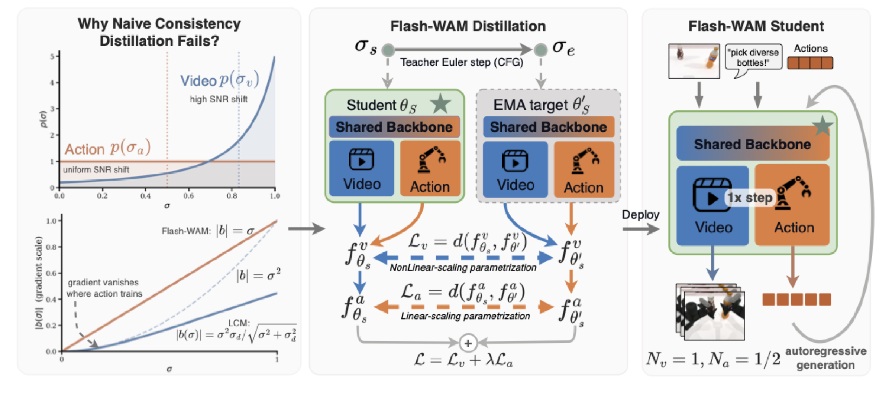
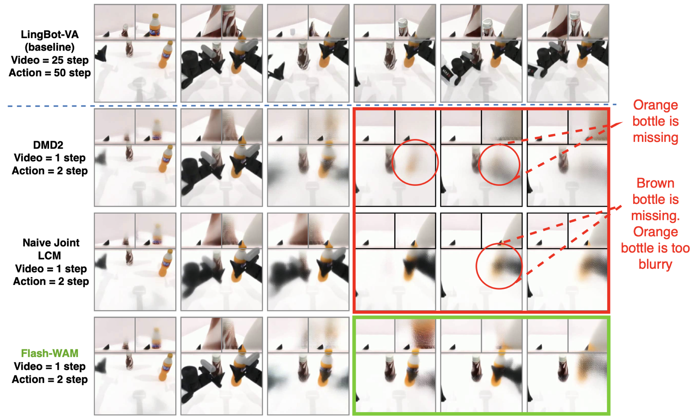

World-action models (WAMs) jointly generate future video and robot actions via iterative diffusion, but require tens of denoising steps per chunk, precluding real-time control. Off-the-shelf step distillation fails here because the video and action streams use asymmetric noise schedules, causing the gradient signal for actions to vanish under standard consistency distillation.
We introduce Flash-WAM, a modality-aware distillation framework that assigns each stream its own consistency function matched to its noise regime. Instantiated on LingBot-VA, Flash-WAM compresses inference from 25 video and 50 action steps down to 1 each — a 23× speedup (8.1s → 348 ms) enabling real-time inference on a single NVIDIA L40S. Flash-WAM achieves 85.5% on RoboTwin 2.0 and 95.7% on LIBERO, while naive distillation drops to 24%.
Left: Naive consistency distillation fails on joint video-action models because the two modalities operate in structurally different noise regimes. The gradient signal for actions vanishes quadratically under standard LCM parametrization. Middle: Flash-WAM assigns each modality its own consistency function — a variance-preserving (Karras) parametrization for the high-noise video stream and a linear-gradient-scaling parametrization for the low-noise action stream. Right: The distilled student autoregressively generates video and actions with a single denoising step per modality.

Success rates on RoboTwin 2.0 simulation (Clean and Randomized splits, 50 tasks) and speedup over the LingBot-VA teacher.
| Method | Nv | Na | Clean | Rand. | Average | Speedup |
|---|---|---|---|---|---|---|
| π0 | – | – | 65.92 | 58.40 | 62.2 | – |
| π0.5 | – | – | 82.74 | 76.76 | 79.8 | – |
| X-VLA | – | – | 72.9 | 72.8 | 72.8 | – |
| Motus | – | – | 88.66 | 87.02 | 87.8 | – |
| LingBot-VA* | 25 | 50 | 91.64 | 90.86 | 91.25 | 1.0× |
| LingBot-VA + DMD2 | 1 | 2 | 85.08 | 72.36 | 78.74 | 19.0× |
| LingBot-VA + Video-only LCM | 1 | 2 | 80.66 | 76.92 | 78.79 | |
| LingBot-VA + Naive Joint LCM | 1 | 2 | 25.88 | 22.07 | 23.97 | |
| Ours | 1 | 2 | 88.42 | 82.66 | 85.54 | |
| LingBot-VA + DMD2 | 1 | 1 | 52.66 | 48.46 | 50.56 | 23.3× |
| LingBot-VA + Video-only LCM | 1 | 1 | 77.90 | 69.46 | 73.68 | |
| LingBot-VA + Naive Joint LCM | 1 | 1 | 39.68 | 32.96 | 36.32 | |
| Ours | 1 | 1 | 82.56 | 80.26 | 81.41 | |
We evaluate Flash-WAM on a Unitree G1 humanoid robot equipped with Dex1-1 grippers across three manipulation tasks. Each task is tested 10 times per configuration. The baseline uses the original LingBot-VA setting with 3 video and 10 action denoising steps. Reducing steps without distillation causes significant degradation, while Flash-WAM recovers most of the baseline performance at drastically reduced inference cost.
| Method | Nv / Na | T1 | T2 | T3 | Average |
|---|---|---|---|---|---|
| LingBot-VA | 3 / 10 | 50% | 70% | 80% | 66.7% |
| LingBot-VA (reduced NFE) | 1 / 2 | 30% | 30% | 60% | 40.0% |
| LingBot-VA + Video-only LCM | 1 / 2 | 30% | 50% | 50% | 43.3% |
| Flash-WAM | 1 / 2 | 50% | 60% | 70% | 60.0% |
| LingBot-VA (reduced NFE) | 1 / 1 | 10% | 30% | 30% | 23.3% |
| LingBot-VA + Video-only LCM | 1 / 1 | 20% | 40% | 40% | 33.3% |
| Flash-WAM | 1 / 1 | 40% | 50% | 60% | 50.0% |
End-to-end rollouts on the Unitree G1. The baseline (3v/10a) succeeds but is too slow for real-time control. Reducing steps to 1v/1a without distillation causes failure. Flash-WAM (1v/1a) recovers successful behavior at real-time speed.
Video predictions from an open-loop autoregressive rollout on RoboTwin "pick diverse bottles". Both off-the-shelf distillation baselines (naive joint LCM and DMD2) visibly degrade: objects disappear or become blurred. Flash-WAM preserves scene structure and object identity throughout the rollout.

@article{akbari2025flashwam,
title = {Flash-WAM: Modality-Aware Distillation for World Action Models},
author = {Akbari, Arman and Zhang, Ci and Akbari, Arash and Zhao, Lin and Chen, Yixiao and Chen, Weiwei and Zhang, Xuan and Yuan, Geng and Wang, Yanzhi},
journal = {arXiv preprint arXiv:2507.00780},
year = {2025},
}